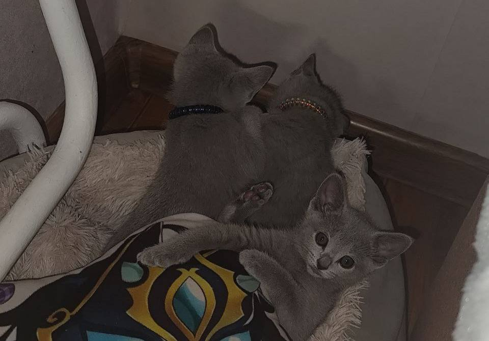

Котики – это серьёзно
Я – Аня. Собрала на одном сайте полезные советы по уходу, мини‑гайды и фотоподборку.
- питание
- игры
- гигиена
- вет-советы

Что есть на сайте
Краткие инструкции
Список базовых вещей: лоток, когтеточка, привычки, безопасность дома.
Чек‑лист ухода
Питание, вода, шерсть, когти, профилактика и когда идти к ветеринару.
Галерея
Небольшая коллекция фото (можно сделать карточки “до/после”).